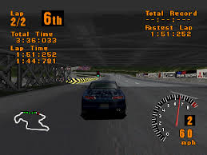
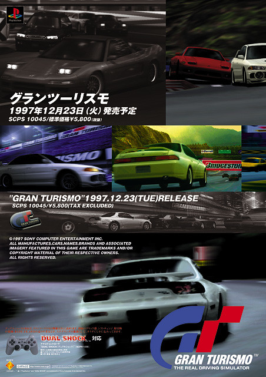
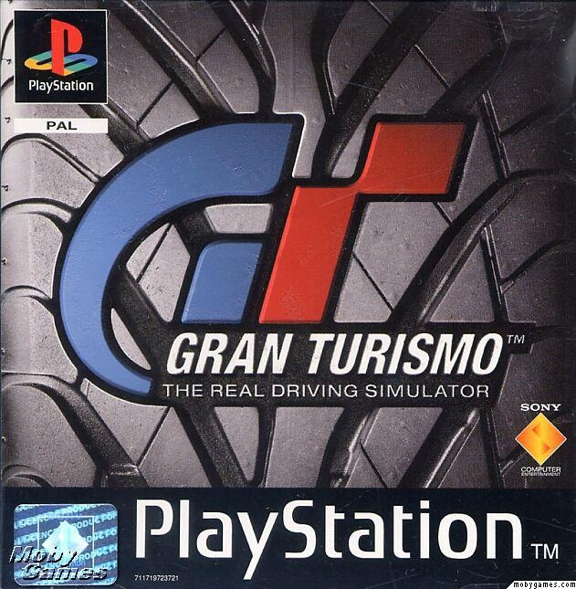

Galería de Imágenes



Gran Turismo fue lanzado en 1997 para la consola Sony PlayStation y se convirtió rápidamente en un hito dentro del género de simulación de carreras. Desarrollado por Polyphony Digital, el juego destacó por su realismo, la cantidad de vehículos disponibles, y su profundidad técnica, algo nunca antes visto en un título de conducción para consolas domésticas.
Gran Turismo introdujo una física avanzada para la época, permitiendo que los autos se comportaran de manera más realista según su tipo, peso y potencia. También fue pionero al incluir licencias de conducción, que obligaban al jugador a completar pruebas antes de acceder a ciertas competiciones, lo que aportaba una capa de progresión que elevaba el nivel de inmersión y desafío.
El juego incluía más de 140 vehículos reales, todos recreados con detalles impresionantes. Marcas como Toyota, Honda, Nissan, Mitsubishi, y Mazda fueron parte de este primer título, y cada coche tenía su propio manejo distintivo. Los circuitos, aunque ficticios, estaban diseñados para poner a prueba la habilidad del conductor en distintos tipos de curvas, pendientes y condiciones.
Gran Turismo redefinió lo que se esperaba de un juego de carreras. Fue uno de los primeros en ser tomado en serio por los entusiastas del automovilismo por su enfoque técnico. También marcó el inicio de una de las franquicias más exitosas de Sony, convirtiéndose en una pieza clave en la identidad de la PlayStation y dando pie a múltiples secuelas y spin-offs a lo largo de los años.
El juego recibió elogios por su realismo, gráficos de vanguardia para la época, y su profundo sistema de personalización. Vendió más de 10 millones de copias en todo el mundo, consolidándose como uno de los juegos más vendidos de la PlayStation original. Hoy es recordado como el pionero de los simuladores de conducción modernos y una joya de la era dorada de las consolas.